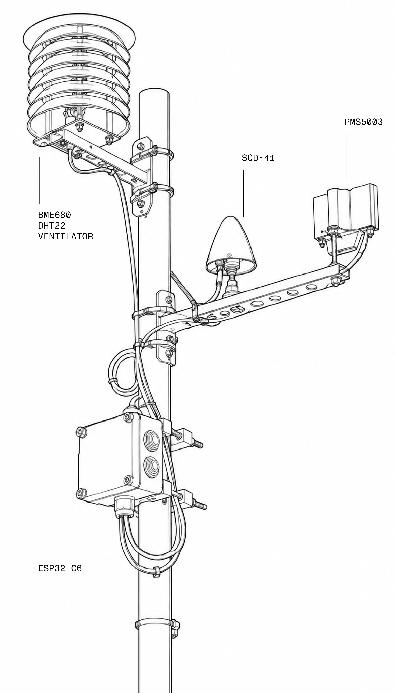

latest data
data graphs
raw data
| date | time | DHT tmp (°C) | BME tmp (°C) | SCD tmp (°C) | DHT hum (%) | BME hum (%) | SCD hum (%) | PM1 (µg/m³) | PM2.5 (µg/m³) | PM10 (µg/m³) | 0.3 µm (#/L) | 0.5 µm (#/L) | 1.0 µm (#/L) | 2.5 µm (#/L) | 5.0 µm (#/L) | 10 µm (#/L) | CO₂ (ppm) | gas (kΩ) | pressure (hPa) |
|---|
info
Located in the Umweltgarten in downtown Leipzig, the weather station continuously records local environmental conditions, quantifying and visualizing changes in its immediate surroundings. The self-made (infra)structure combines several sensors to measure air temperature and humidity, atmospheric pressure, gas resistance as an indicator of changes in air composition, carbon dioxide levels and airborne particles of different sizes. Every four minutes, the collected data is transmitted automatically and made accessible through this website.
Beyond its function as a monitoring device, the weather station is part of the artistic research project »Vegetal Diaries« by Christian Doeller. At the intersection of urban ecologies, environmental monitoring, and the relationship between »the living world« and technology, the project investigates urban ruderal plants, urban energy flows, and speculative practices of environmental observation.
Currently deployed sensors: DHT22, BME680, SCD41, PMS 5003
